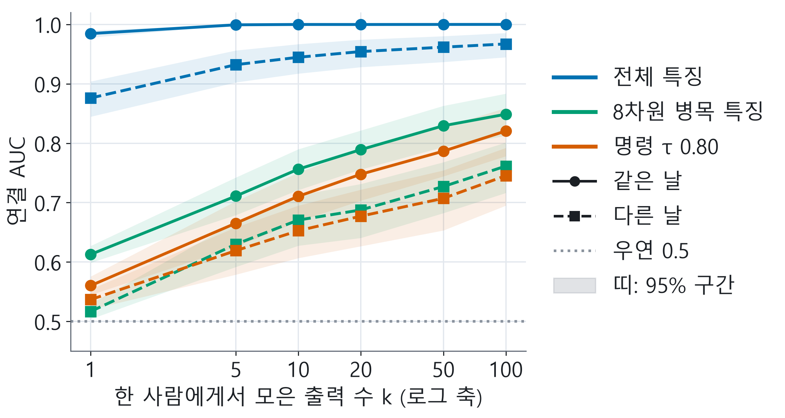
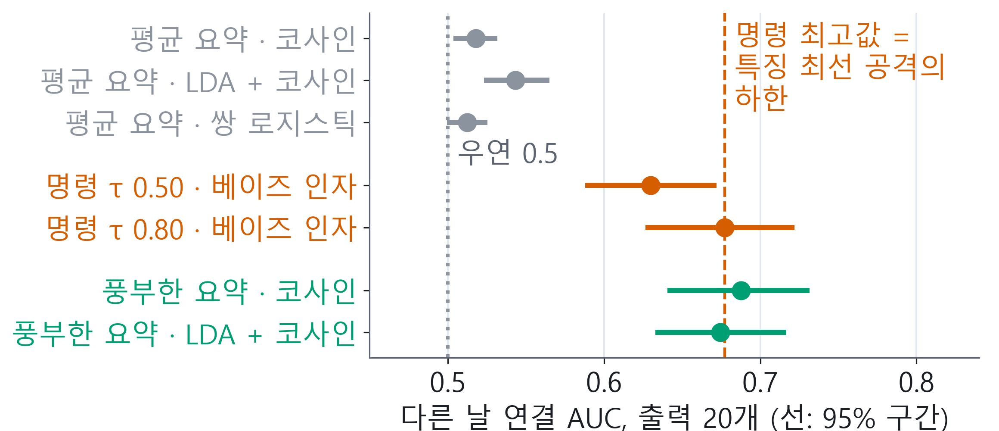
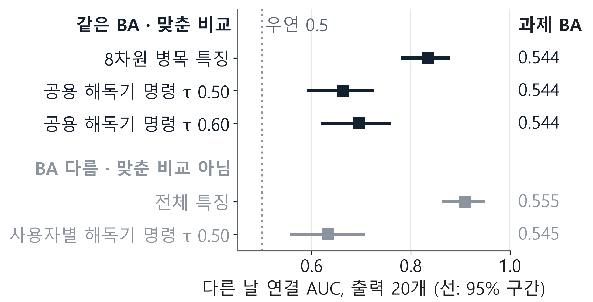
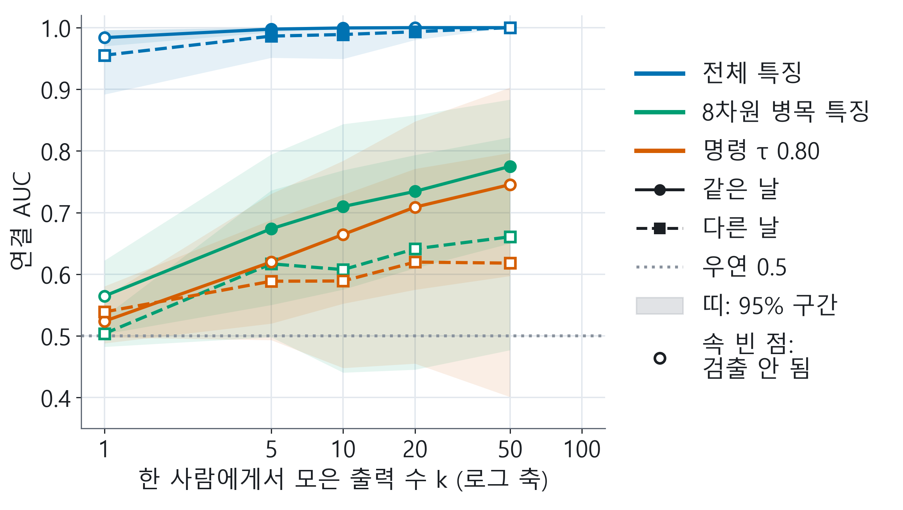
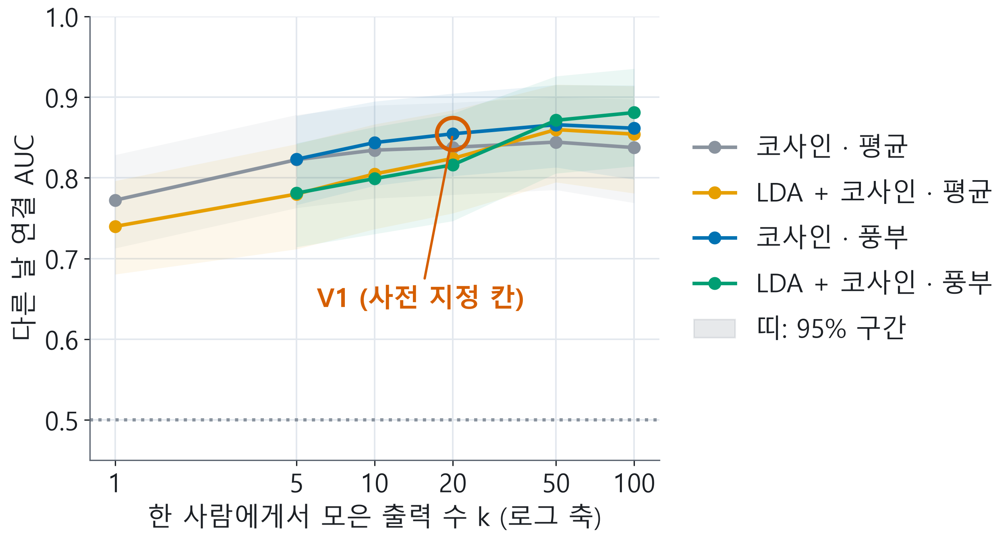
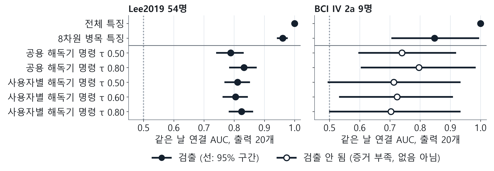
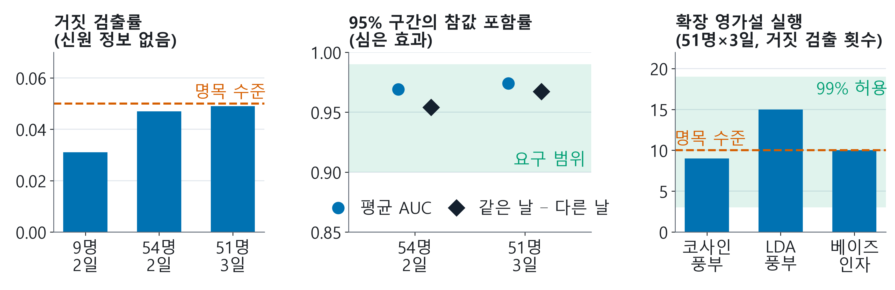

BEAT 프로젝트 결과 발표 · v3
공격자가 등록하지 않은 사용자라도, BCI가 밖으로 보내는 출력만으로 두 기록이 같은 사람의 것인지 우연보다 잘 가려낼 수 있다
얼마나 잘 가려내는지는 무엇을 보내는지와 같은 날인지에 따라 달라진다. BEAT는 이제 어느 BCI의 출력이든 이것을 재는 감사 도구 beat_audit 를 제공한다
측정에서 감사 도구로
BEAT 팀 · 이동현 · 장규범
2026년 11월 16일
[약 45초] 안녕하세요, BEAT 팀 이동현입니다. 지난 v2에서는 공격자가 사용자를 미리 등록해 두고 누구인지 맞히는 위험을 쟀습니다. 오늘 v3는 한 걸음 더 갑니다. 공격자가 한 번도 등록한 적 없는 사람이라도, BCI가 밖으로 보내는 출력만 보고 두 기록이 같은 사람의 것인지 가려낼 수 있을까요? 답은 우연보다는 잘 가려낸다는 것이고, 그 정도는 무엇을 보내는지, 그리고 같은 날인지에 따라 달라집니다. 그리고 이제 누구나 자기 BCI에서 이것을 잴 수 있도록 도구로 만들었습니다. ◆ 틀리면 안 되는 문장: "등록하지 않은 쪽은 공격자입니다. 우연보다 잘 가려낸다는 뜻이지, 항상 맞힌다거나 몇 퍼센트를 식별한다는 뜻이 아닙니다."
문제 · 누가 무엇을 보는가
BCI는 해독 결과를 밖으로 보내고, 그것을 보는 공격자는 사용자를 등록하지 않고도 기록을 이을 수 있다
공격자 같은 날 다른 날 등록한 공격자 미리 모은 기록에서 누구인지 고른다 (식별)
v1–v2 v1–v2 등록하지 않은 공격자 처음 보는 두 기록이 같은 사람인지 가린다 (연결)
v3 v3
같은 날 = 한 날의 두 구간끼리 · 다른 날 = 서로 다른 날끼리
공격자는 전송물만 본다. 뇌파 원본도 이름도 모른다
연결(linkage)이란
두 출력 묶음이 같은 사람의 것인지 가리는 일. 공격자는 그 사람을 등록한 적이 없다
AUC: 같은 사람 쌍을 다른 사람 쌍보다 더 비슷하게 매길 확률, 사람마다 구해 평균
0.5 = 우연 · 1.0 = 늘 가려냄
식별률이 아니다
2
[약 60초] BCI는 뇌파를 기기 안에서 해독하고, 그 결과를 앱이나 클라우드, 로봇팔로 보냅니다. 밖으로 나가는 것은 특징 벡터이거나 왼쪽, 오른쪽, 정지 같은 명령입니다. 이 전송물을 보는 공격자를 두 축으로 나눠 보겠습니다. 사용자의 기록을 미리 모아 등록했는지, 그리고 비교하는 두 기록이 같은 날인지 다른 날인지입니다. v1과 v2는 위 줄, 등록한 공격자만 다뤘습니다. v3는 아래 줄, 등록하지 않은 공격자를 봅니다. 이 공격자가 하는 일을 연결이라고 부르겠습니다. 출력 두 묶음이 같은 사람 것인지 가리는 일입니다. 점수는 AUC입니다. 같은 사람 쌍을 다른 사람 쌍보다 더 비슷하다고 볼 확률입니다. 0.5면 동전 던지기와 같고, 1이면 늘 가려냅니다. ◆ 틀리면 안 되는 문장: "AUC 0.5가 우연이고, 이 값은 식별률이 아닙니다."
v1–v2 요약 · 봉인된 분석
v1–v2는 사용자를 등록한 공격자의 식별을 공개 데이터 세 종에서 결과를 보기 전에 봉인한 채 쟀다
데이터 사전등록한 주장의 판정 BCI IV 2a · 9명H1, H2 지지 안 됨 Lee2019 · 54명C1, C2, C4 지지 · C3 지지 안 됨 Yang2025 · 51명 · 다른 날M1, M3 지지 · M2 지지 안 됨
Lee2019 전체 특징의 식별 정확도
같은 날
0.994
확증 C2 기준값
다른 날
0.520
사전등록 추정치
식별 정확도의 우연 = 1/사용자 수. v3의 연결 AUC와 다른 척도다
v2 논지 · 결과를 보기 전에 결정 로그에 고정한 문장, 그대로 유지
“BCI 전송물의 신원 노출과 방어 효과는 공격자가 어느 날의 기록으로 등록하느냐에 따라 달라지므로, 같은 날 수치 하나로는 위험도 보호도 주장할 수 없다.”
3
[약 60초] v1과 v2를 한 장으로 정리하겠습니다. 공개 데이터 세 종을 썼고, 확증 분석은 모두 결과를 보기 전에 봉인했습니다. 봉인은 1부터 4까지이고, 마지막 봉인 4는 제3자 시각 인증까지 받았습니다. 9명의 2a에서는 처음 세운 가설 H1과 H2가 지지되지 않았습니다. 54명의 Lee2019에서는 C1, C2, C4가 지지됐고 C3는 지지되지 않았습니다. 새 51명의 Yang2025에서는 다른 날 조건에서 M1과 M3가 지지되고 M2는 지지되지 않았습니다. 핵심 수치는 같은 날 0.994, 다른 날 0.520이었습니다. 이것은 오늘 쓰는 AUC가 아니라 식별 정확도이고, 우연 수준은 사용자 수 분의 1입니다. v2의 논지는 결과를 보기 전에 결정 로그에 고정해 두었고, 오늘도 그대로입니다. ◆ 틀리면 안 되는 문장(그대로 읽는다): "BCI 전송물의 신원 노출과 방어 효과는 공격자가 어느 날의 기록으로 등록하느냐에 따라 달라지므로, 같은 날 수치 하나로는 위험도 보호도 주장할 수 없다."
냉정한 자기 평가
v2는 등록하지 않은 공격자, 범용 독립 감사 도구, 쓸 만한 해독기라는 세 가지에 답하지 못했다
등록한 공격자만 쟀다
정해진 인원 안에서 누구인지 고르는 식별이었다
처음 보는 사람의 기록을 잇는 위험은 몰랐다
v3: 등록 없는 연결을 잰다
범용 독립 감사 도구가 없었다
감사 절차가 BEAT의 실험 코드 안에만 있었다
다른 BCI의 출력에 쓸 방법이 없었다
v3: 감사 도구 beat_audit
해독기가 약했다
Yang2025 두 손 구분 정확도(BA) 0.544–0.555, 우연 0.5
유용성 쪽 수치가 쓸 만한 BCI를 대표하지 못한다
v3: 사용자별 해독기 시험 (12쪽)
v3는 도구를 만들고, 정답을 아는 자료로 검증한 뒤, 세 코호트에 적용했다. v1–v2의 판정은 바꾸지 않았다
4
[약 45초] 냉정하게 보면 v2가 답하지 못한 것이 셋 있었습니다. 첫째, 등록한 공격자만 쟀습니다. 정해진 인원 안에서 누구인지 고르는 문제였고, 처음 보는 사람의 기록을 잇는 위험은 몰랐습니다. 둘째, 범용 독립 감사 도구가 없었습니다. 감사 절차가 저희 실험 코드 안에만 있어서 다른 BCI를 만드는 사람이 자기 출력에 쓸 수 없었습니다. 셋째, 해독기가 약했습니다. Yang2025의 두 손 구분 정확도가 0.544에서 0.555로, 우연인 0.5를 조금 넘는 수준이었습니다. 이 값은 탐색 결과입니다. v3는 이 셋에 답하려 했습니다. ◆ 틀리면 안 되는 문장: "해독기가 약하다는 것은 유용성 쪽 수치가 쓸 만한 BCI를 대표하지 못한다는 뜻입니다."
도구 · beat_audit
beat_audit는 BCI가 보내는 출력에 사용자와 날 라벨만 붙이면 연결 보고서를 쓴다
입력: 전송한 그대로
outputs · user · day
특징 또는 명령, 가명, 날
→
beat-audit run
처음 보는 사용자끼리, 같은 날과 다른 날을 나란히
→
출력
report.md · report.json
표, 쉬운 읽기, 한계, 그림
시작하기
python -m pip install .
beat-audit run out.csv --out rep --kind commands
beat-audit compare feat=f/report.json \
cmd=c/report.json --derived-from cmd=feat \
--utility u.json --out t.csv
--derived-from 으로 명령이 어느 특징에서 나왔는지 선언해야 compare가 ‘명령 > 특징’ 모순을 표시한다
Condition k AUC 95% interval same-day 20 0.7478 [0.7034, 0.7902] cross-day 20 0.6772 [0.6266, 0.7218]
k = 한 사람에게서 모은 출력 수
“Not detected means insufficient evidence, not absence; never a safety claim.”
5
[약 65초] 그래서 만든 것이 beat_audit입니다. 입력은 BCI가 실제로 보낸 출력, 즉 특징 벡터나 명령에 가명 사용자 라벨과 날 라벨만 붙이면 됩니다. run 명령 한 줄이면 보고서가 나오고, 사용자가 20명보다 적으면 경고합니다. 오른쪽이 실제 보고서의 표입니다. 보고서 첫머리에는 공격자에게 처음 보는 사람일 뿐 BCI에게 처음 보는 사람은 아니며, 익명성이나 안전이나 법적 결론은 없다고 먼저 적습니다. 표의 k는 공격자가 한 사람에게서 모아 비교하는 출력 수입니다. 이 예에서는 명령 20개로 같은 날 0.7478, 다른 날 0.6772였습니다. compare 명령은 여러 전송 방식을 한 표로 비교합니다. 이때 명령이 어떤 특징에서 나왔는지 derived-from으로 선언해야, 명령 공격이 특징 공격보다 센 모순을 표에 표시합니다. 해독 성능 수치는 빌더가 직접 넣는 값입니다. ◆ 틀리면 안 되는 문장: "검출되지 않음은 증거가 부족하다는 뜻이지 없다는 뜻이 아니고, 보고서는 안전을 말하지 않습니다."
다른 분야에서 빌린 방법
여섯 분야의 검증된 방법을 빌려 왔고, 각 비유가 어디서 멈추는지도 함께 적었다
분야와 출처 빌린 것 비유가 멈추는 곳 생체인식 성능 시험 같은 사람 대 다른 사람 시료가 아니라 출력 묶음을 화자 익명화 평가 공격자 등급: 약한 공격자는 비유일 뿐 그 프로토콜을 순차 분석 명령 몇 개 만에 연결 여부를 오류 보장은 생성 모형 대규모 생체인식 점수 분포로 더 큰 갤러리 N의 점수 독립을 가정한다. 실측과
나머지 두 분야, 템플릿 보호의 연결 불가능성과 법과학 우도비는 백업 B12
6
[약 60초] 방법은 새로 만들지 않고, 이미 검증된 분야에서 빌렸습니다. 화면에는 오늘 결과와 직접 이어지는 넷을 골랐습니다. 생체인식 성능 시험에서는 같은 사람과 다른 사람의 비교 점수로 평가하는 틀을, 화자 익명화 평가에서는 약한 공격자가 보호를 부풀린다는 공격자 등급의 생각을 가져왔습니다. 이 함정은 9쪽에서 저희 자신에게 일어납니다. 순차 분석에서는 명령 몇 개 만에 판단하는 검정을, 대규모 생체인식에서는 사람 수가 늘 때의 예측식을 가져왔습니다. 이 둘은 12쪽에서 스스로 점검에 걸립니다. 오른쪽 열에는 각 비유가 어디서 멈추는지 적었습니다. 템플릿 보호와 법과학 우도비는 백업에 있습니다. ◆ 틀리면 안 되는 문장: "빌린 것은 방법이고, 각 분야의 표준 절차를 그대로 따랐다고 말하지 않습니다."
쓰기 전에 검증
정답을 아는 합성 자료와 확증 연구 L의 등록 수치로 도구를 먼저 검증했다
신원 정보가 없을 때 거짓 검출률 (세 크기, 1,000회씩)
최대 0.049 명목 0.05 이하
심은 효과에서 95% 구간이 참값을 포함한 비율
최저 0.954 요구 0.90–0.99 안
실제 배치 설정의 확장 영가설 실행 (비교기 3종, 200회씩)
최대 15/200 · 99% 허용 3–19회 안
명목 5%보다는 높다
확증 연구 L 등록값 재현
0.520 → 0.520
등록값 → 도구, 차이 0.0 (허용 0.01)
패리티는 닫힌 집합 모듈만 검증한다. 새 연결 측정의 정확성은 합성 검증이 맡는다
7
[약 60초] 도구를 실제 데이터에 쓰기 전에 두 가지로 검증했습니다. 먼저 정답을 아는 합성 자료입니다. 신원 정보를 전혀 넣지 않으면, 도구가 연결이 있다고 잘못 말하는 비율이 5퍼센트를 넘으면 안 됩니다. 세 가지 크기에서 1,000번씩 돌려 0.031, 0.047, 0.049였고, 가장 높은 값도 0.05 아래였습니다. 효과를 심었을 때 95퍼센트 구간이 참값을 포함한 비율은 가장 낮아도 0.954로, 요구 범위 0.90에서 0.99 안이었습니다. 실제 배치와 같은 설정으로 200번씩 더 돌린 실행에서는 한 비교기가 200번 중 15번으로 명목 5퍼센트보다 높았지만, 미리 정한 허용 범위 3에서 19회 안이었습니다. 둘째로, 도구의 닫힌 집합 모듈이 확증 연구 L에 등록된 0.994와 0.520을 차이 없이 재현했습니다. ◆ 틀리면 안 되는 문장: "패리티는 닫힌 집합 모듈만 검증합니다. 연결 측정이 맞는지는 합성 검증이 보여 줍니다."
결과 1 · Lee2019 54명 · 탐색
등록 없이도 출력이 쌓일수록 연결은 강해지고, 다른 날에는 같은 날보다 약하다

τ 0.80: 해독기 확신이 0.80보다 낮으면 왼쪽·오른쪽 대신 정지를 보낸다
명령만 (τ 0.80)
0.677 같은 날 0.748
8차원 병목 특징
0.688 같은 날 0.789
특징 값은 비교기 중 최고(사후 선택)
8
[약 65초] 첫 번째 결과입니다. 54명의 Lee2019에서, 공격자가 아무도 등록하지 않은 채 출력을 모을수록 연결이 얼마나 강해지는지 봤습니다. 가로축 k는 한 사람에게서 모은 출력 수이고, 출력 하나는 실험 설계상 명목 13초입니다. 실선은 같은 날, 점선은 다른 날입니다. τ는 정지 임계값입니다. 해독기가 0.80만큼 확신하지 못하면 왼쪽, 오른쪽 대신 정지를 보냅니다. 명령만 보내도, 다른 날 기준으로 명령 하나일 때 0.537에서 20개, 명목 4분 20초면 0.677, 100개면 0.745까지 올라갑니다. 같은 20개에서 8차원 병목은 0.688, 전체 특징은 0.954입니다. 모든 전송물에서 다른 날 값이 같은 날보다 낮습니다. 이 결과는 탐색입니다. 도구를 이 데이터로 개발했고, 특징 값은 여러 비교기 가운데 가장 높은 것을 사후에 고른 값입니다. ◆ 틀리면 안 되는 문장: "탐색 결과이고, 0.677은 같은 사람인지 가리는 연결 점수이지 67.7퍼센트를 식별한다는 뜻이 아닙니다."
결과 2 · 도구가 잡은 BEAT 자신의 함정 · Lee2019 · 탐색
평균만 보는 공격자는 8차원 병목의 노출을 낮게 보였고, 같은 특징에서 나온 명령이 그 모순을 드러냈다

평균 요약 중 최고
0.543 [0.523, 0.565]
같은 특징에서 해독한 명령
0.630–0.677
풍부한 요약을 더한 뒤
0.688 [0.641, 0.731]
규칙 특징을 가진 공격자는 해독기를 재현해 명령 공격도 할 수 있다. 따라서 특징에 대한 최선의 공격은 명령에 대한 최선의 공격보다 약할 수 없다. 구현한 개별 비교기는 약할 수 있다 (LDA 풍부 0.675 < 명령 0.677)가드 --derived-from 을 선언하면 compare가 이 모순을 표시한다. 출력 1개에서는 지금도 켜진다:
9
[약 60초] 두 번째 결과는 저희 자신의 실수입니다. 개발 중에 8차원 병목 특징을 평균만 보는 비교기로 공격했더니, 다른 날 출력 20개에서 가장 높아야 0.543이었습니다. 그런데 같은 특징에서 해독한 명령은 0.630에서 0.677이었습니다. 명령은 특징에서 해독기로 계산하니까, 특징을 가진 공격자는 해독기를 재현해 똑같은 명령 공격을 할 수 있습니다. 그래서 특징에 대한 최선의 공격은 명령에 대한 최선의 공격보다 약할 수 없습니다. 저희 특징 공격자가 너무 약했던 것입니다. 단서별 평균과 로그 분산을 쓰는 풍부한 요약을 더하자 코사인 비교기는 0.688로 올라갔습니다. 다만 개별 비교기는 여전히 약할 수 있습니다. LDA 풍부는 0.675로 명령보다 조금 낮습니다. 이 검사는 compare의 가드로 넣었고, 출력 하나에서는 지금도 켜집니다. 그때 특징 값 0.515는 가드가 쓰는 동결 특징 비교기 4종 가운데 최고값입니다. ◆ 틀리면 안 되는 문장: "특징에 대한 최선의 공격이 명령에 대한 최선의 공격보다 약할 수 없다는 뜻이지, 우리가 구현한 모든 특징 비교기가 명령보다 강하다는 뜻이 아닙니다."
결과 3 · Yang2025 51명 · 사전 지정(비맹검)
계산 전에 고정하고 한 번만 돌린 Yang2025 배치에서 사전 지정한 예측 V1과 V2가 모두 지지됐다
① 동결 freeze-5
도구·설정·입력·예측 2개
→
→
사전 지정(비맹검)
다른 날
Holm 보정 V1과 V2, α = 0.05
예측 무엇을 연결했나 연결 AUC [95%] Holm p 판정 V1 전체 특징, 1일차 ↔ 2–3일차, 출력 20개 0.855 [0.802, 0.905]2.0 × 10⁻⁴ 지지 V2 8차원 병목의 명령 τ 0.60, 명령 50개 0.567 [0.540, 0.596]2.0 × 10⁻⁴ 지지 대비 전체 특징, 같은 날 − 다른 날 0.144 [0.094, 0.197]검정 없음 판정 없는 추정치
사전 지정(비맹검): 계산 전에 고정하고 한 번 돌렸다. 이 51명의 신원 결과를 연구 M에서 이미 알았으므로 확증 재현이 아니다
10
[약 75초] 세 번째 결과는 미리 정한 대로 한 번만 돌린 배치입니다. Yang2025 51명에 대해 도구와 설정, 입력의 해시, 폴드와 seed, 그리고 예측 두 개를 freeze-5라는 커밋으로 고정해 올린 뒤, 배치를 단 한 번 돌렸습니다. 180칸이 모두 정상으로 끝났습니다. V1은 전체 특징을 1일차와 2–3일차 사이에서 잇는 다른 날 조건입니다. 출력 20개, 2분 40초 분량에서 풍부한 요약의 코사인 비교기로 0.855, 구간 0.802에서 0.905였고 지지됐습니다. V2는 명령만, 명령 50개, 6분 40초 분량에서 베이즈 인자 공격자로 0.567, 구간 0.540에서 0.596으로 역시 지지됐습니다. 같은 날에서 다른 날을 뺀 대비는 0.144로, 판정 없는 추정치입니다. 독립 검토자가 별도 코드로 다시 계산했고, 모든 값과 판정이 일치했습니다. 이 등급은 사전 지정, 비맹검입니다. 이 51명의 신원 결과를 연구 M에서 이미 알았기 때문에 확증 재현이라고 부르지 않습니다. 또 공격자에게만 처음 보는 사람이고, BCI의 인코더와 해독기는 이들의 보정 자료로 맞췄습니다. ◆ 틀리면 안 되는 문장: "사전 지정, 비맹검이며 확증 재현이 아닙니다. 판정은 V1과 V2 두 개뿐입니다."
전송 사다리 · Yang2025 2–3일차 · 탐색
같은 과제 BA에서 공용 해독기의 명령은 원천인 8차원 특징보다 다른 날 연결이 낮았지만, 연결이 사라지지는 않았다

같은 과제 BA 0.544, 출력 20개
0.835 → 0.663–0.696
8차원 특징 → 그 특징에서 해독한 공용 명령. 구간이 겹치지 않는다
모든 단계에서 연결이 검출됐다. 연결을 없앤 단계는 없다
전체 특징과 사용자별 해독기는 BA가 달라 맞춘 비교가 아니다
· 구간이 안 겹친 조건: Yang2025는 다른 날, Lee2019는 같은 날. 2a(9명)는 겹친다
· 특징 값은 비교기 4종 중 최고(사후 선택), 명령은 1종 · 특징과 명령은 다른 종류의 공격자다
11
[약 70초] 그럼 무엇을 보내야 할까요. 같은 51명의 2일차와 3일차, 어떤 모델도 맞추지 않은 날만으로 전송 방식별 사다리를 만들었습니다. 공정하게 비교하려면 해독 정확도가 같아야 합니다. 위 묶음이 그렇습니다. 8차원 병목 특징과, 그 특징에서 공용 해독기로 만든 명령은 과제 BA가 모두 0.544입니다. 다른 날 연결은 특징의 0.835에서 명령의 0.663과 0.696으로 내려갔고 구간이 겹치지 않았습니다. 아래 묶음, 전체 특징과 사용자별 해독기는 BA가 달라 맞춘 비교가 아닙니다. 함께 읽을 단서가 있습니다. 구간이 안 겹친 것은 Yang2025에서는 다른 날, Lee2019에서는 같은 날 비교입니다. Lee2019와 2a는 모델을 맞추지 않은 다른 날이 없어 다른 날 대비가 없고, 9명인 2a에서는 겹칩니다. 특징 값은 비교기 넷 가운데 최고를 사후에 고른 것이고, 특징과 명령은 다른 종류의 공격자입니다. 그리고 어느 단계에서도 연결이 검출됐습니다. ◆ 틀리면 안 되는 문장: "같은 BA에서 명령의 연결이 원천 특징보다 낮았다는 것이지, 어느 단계도 연결되지 않는다거나 안전하다고 말할 수 없습니다."
실패와 보류도 결과다
자체 점검에 실패했거나, 명목과 달랐거나, 입증하지 못한 것과 스스로만 증명할 수 있는 것도 그대로 보고한다
Yang2025 180칸 중 62칸(V1 칸 포함)이 독립 모형 점검에 실패했다. 그 칸은 더 큰 N을 내지 않는다
명목 오류율 0.05. V2 칸의 실제 값은 잘못 연결 0.131, 놓침 0.693 (합성 자료에서는 0.047, 0.024)
사용자별 해독기의 과제 BA
사용자별 대 공용: Yang2025 0.545 대 0.544, Lee2019 0.646 대 0.692, 2a 0.759 대 0.718 (9명, 구간 겹침)
Git과 로그 시각, 기록되지 않은 실행이 없다는 것, push 순서(동결이 배치보다 21초 앞), 추적하지 않는 report.json
12
[약 65초] 실패하거나 입증하지 못한 것도 결과로 보고합니다. 사람 수가 늘 때의 예측은 V1 칸을 포함해 180칸 중 62칸에서 스스로 점검에 실패했고, 그 칸에서는 큰 인원 예측을 내지 않았습니다. 순차 공격자는 명목 오류율이 5퍼센트인데, 실제 V2 칸에서는 잘못 잇는 비율이 0.131, 놓치는 비율이 0.693이었습니다. 합성 자료에서는 0.047과 0.024였으니, 실제 기록에서는 보장이 성립하지 않았습니다. 사용자별 해독기는 일관된 개선을 입증하지 못했습니다. Yang2025에서는 거의 같았고, Lee2019에서는 오히려 낮았고, 2a는 높았지만 9명이라 구간이 겹칩니다. 이것도 탐색 결과입니다. 마지막으로 커밋 시각이나 기록되지 않은 실행이 없다는 것은 저희 스스로만 증명할 수 있습니다. 영가설 실행 하나가 명목보다 높았던 것과 보고서 문구 문제는 백업에 있습니다. ◆ 틀리면 안 되는 문장: "사용자별 해독기는 일관된 개선을 입증하지 못했다는 것이지, 효과가 없다고 증명한 것이 아닙니다."
정리
등록하지 않은 공격자도 BCI 전송물로 한 사람의 기록을 잇는다.
BCI를 만드는 사람이 오늘 할 수 있는 일
1
보내기 전에 잰다 · 전송물에 사용자와 날 라벨을 붙여 beat-audit run 을 돌리고 같은 날과 다른 날을 함께 본다
2
보낼 것을 고른다 · beat-audit compare 로 후보 전송물의 연결을 한 표에 놓는다. 표의 해독 성능 수치는 빌더가 직접 넣는 값이다
3
그대로 보고한다 · 검출 안 됨은 없음이 아니고, 어떤 수치도 안전이나 익명을 뜻하지 않는다
한계
공개 데이터 세 종의 재생 기록이다. 공격자는 도구의 비교기까지라 수치는 하한이다. Yang2025 배치는 비맹검이고, BCI는 이 사용자들을 이미 봤다
다음
날 변화를 아는 공격자, 쓸 만한 해독기와 실제 온라인 BCI에서의 감사, 무작위화 방어의 경험적 하한(아직 계획만 있다)
감사합니다. 질문을 받겠습니다
[약 50초] 정리하겠습니다. 등록하지 않은 공격자도 BCI 전송물로 한 사람의 기록을 잇습니다. 그 정도는 무엇을 보내는지와 날에 따라 다릅니다. BCI를 만드는 분이 오늘 할 수 있는 일은 셋입니다. 보내기 전에 재고, 후보 전송물을 한 표에서 비교하고, 검출 안 됨을 안전이라고 쓰지 않는 것입니다. compare 표의 해독 성능 수치는 빌더가 직접 넣는 값이라 도구가 재지 않습니다. 한계도 분명합니다. 공개 데이터 세 종의 재생 기록이고, 공격자는 도구의 비교기까지라 수치는 하한입니다. 다음은 날 변화를 아는 공격자, 그리고 실제로 쓸 만한 BCI에서의 감사입니다. 감사합니다. 질문을 받겠습니다. ◆ 틀리면 안 되는 문장: "어떤 수치도 안전이나 익명을 뜻하지 않습니다." [발표하지 않음: 슬라이드 1–13 메모 합계 13분 00초(45 + 60 + 60 + 45 + 65 + 60 + 60 + 65 + 60 + 75 + 70 + 65 + 50초), v2 발표와 같은 13분 기준. 넘치면 6쪽의 표 설명을 두 분야로 줄이고, 12쪽의 마지막 항목은 질문으로 넘긴다. 3쪽 논지 문장, 10쪽 등급 문장, 11쪽 마지막 단서는 빼지 않는다.]
백업 B1 · v2의 두 함정
함께 학습한 식별기의 점수와 기준 세션 공격자만의 시험은 보호를 부풀린다 (v2)
함정 1 · 함께 학습한 식별기의 점수
함정 2 · 기준 세션 공격자만의 시험
BCI IV 2a 9명, λ = 1
0.026 대 0.951
함께 학습한 식별기 대 독립 공격자
arXiv 2610.15626 재현, 2a 9명
90.8% → 11.1%
기준 세션 라벨만 가진 공격자
Lee2019 54명, λ = 1 · 공격자 값은 같은 날
0.040 대 0.514
Holm p = 8.9 × 10⁻²⁶
배포 기간 라벨, 사용자당 (2a 9명)
1개 81.75% · 5개 97.11%
같은 날 라벨 몇 개로 방어가 다시 뚫렸다
Lee2019, 세션 1로 등록
0.040 대 0.239
Yang2025 M2는 지지 안 됨: 격차 0.093–0.096이 봉인 하한 0.10 미만
Lee2019 54명
1.34% → 92.7%
논문 2.4% · Holm p = 4.5 × 10⁻³⁵
v1–v2 수치는 등록한 공격자의 식별 정확도(우연 = 1/사용자 수)이며 v3의 연결 AUC와 다른 척도다
B1
[질의응답용] v2의 두 함정입니다. 방어와 함께 학습한 식별기는 0.026이라고 말하지만 독립 공격자는 0.951을 맞혔습니다. 54명 확증 C1에서도 같았습니다. 다른 날 격차 19.9퍼센트포인트는 사전등록 추정치이고, 새 51명의 M2는 지지되지 않았습니다. 기준 세션 라벨만 가진 공격자로 시험한 방어는 같은 날 배포 라벨 몇 개로 다시 뚫렸습니다. v3의 결과 2는 이 첫 번째 함정, 약한 공격자 문제를 BEAT 자신이 범한 사례입니다.
백업 B2 · v2의 명령 흐름과 EQ
명령도 쌓이면 노출이 커졌지만 54명 검정 C3는 지지되지 않았고, EQ의 보장은 맞춘 날에만 정확했다 (v2)
명령 흐름
C3 · Lee2019 54명
지지 안 됨
τ = 0.5, 명령 20개에서 0.085, Holm p = 0.21
P2-RC d = 8, τ = 0.8
0.186 → 0.278
명령 20개 → 100개
같은 설정, 보정일로 등록
0.082 → 0.117
우연 0.019
그룹 균등화 해독 EQ
보정일로 등록, 배포일 공격
0.112 → 0.009
그룹 내 초과 식별, 명령 20개, g = 3
배포일 안에서 등록하고 공격
0.316 → 0.150
절반 가까이 남는다
Yang2025 51명 (연구 M)
판정 없음
EQ 격자: τ* 명령 50개에서 공격자 4종 중 3종이 K와 같은 방향
B2
[질의응답용] v2의 명령 흐름 결과입니다. 54명 확증 검정 C3는 명령 20개에서 0.085였지만 보정 뒤 p가 0.21로 지지되지 않았고, 이 판정은 그대로입니다. 탐색 K에서는 명령이 쌓일수록 노출이 커졌고 다른 날 값이 같은 날의 절반 이하였습니다. EQ는 맞춘 보정일 기준으로는 그룹 안 초과 식별을 거의 없앴지만, 배포일 안에서 등록한 공격자에게는 절반 가까이 남았습니다. v3의 명령 결과는 등록하지 않은 공격자의 연결 AUC라 이 수치와 척도가 다릅니다.
백업 B3 · 연구 M 결과 (v2)
새 사용자 51명, 다른 날: 사전등록한 주장 3개 중 2개가 지지됐다
다른 날
확증 M1–M3
1일차로 등록, 2–3일차 공격 · Holm α = 0.05 · 독립 재계산 통과
주장 사전등록한 문구 · 판정 기준 결과 판정 M1 원 특징의 다른 날 식별(사전등록상 저위험 재현)기준: 최강 공격자 평균 재현율 > 10/51
로지스틱 공격자 재현율 0.345 대 10/51 = 0.196 지지 M2 독립 공격자와 공동 학습 head의 격차가기준: P3 λ = 1, 관측 격차 ≥ 0.10인 공격자만 검정
격차 0.093–0.096: 모두 0보다 크지만 봉인한 관측 하한 0.10 미만 → 검정한 공격자 없음, 규칙상 p = 1 지지 안 됨 M3 본인의 순위가 우연보다 높고기준: P2-RC d = 8, τ* = 0.60,
순위 0.649 대 명령 1개 0.538, Holm p = 1.1 × 10⁻⁴순위는 식별률이 아니다: top-1 0.061 지지
결과마다 쓸 문장은 결과를 보기 전에 결정 로그에 고정했다 (커밋 7b14cee). EQ와 무작위 응답은 사전등록한 추정치, 판정 없음. C3는 지지 안 됨으로 남는다
B3
[질의응답용] 연구 M은 v2의 마지막 확증 실험입니다. 1일차로 등록하고 2–3일차를 공격한 다른 날 조건에서 M1과 M3는 지지되고 M2는 지지되지 않았습니다. M2의 격차는 모두 0보다 컸지만 봉인한 관측 하한 0.10에 못 미쳐 검정할 공격자가 없었습니다. 격차가 없다는 뜻은 아닙니다. v3의 Yang2025 배치는 이 결과를 이미 안 상태에서 설계했기 때문에 비맹검입니다.
백업 B4 · v1–v2의 봉인된 주장
v1–v2의 봉인된 주장 아홉 개 가운데 다섯 개가 지지되고 네 개는 지지되지 않았다
주장 내용 결과 판정 H1 접공간 해독기 > CSP, 보정 1 run (2a) 0.689 대 0.669, p = 0.10 지지 안 됨 H2 적대 학습 P3가 P2보다 노출을 5%p 이상 줄인다 (2a) 선택된 λ = 0.01, 차이 없음 지지 안 됨 C1 독립 공격자와 함께 학습한 식별기의 격차 0.514 대 0.040, Holm p = 8.9 × 10⁻²⁶ 지지 C2 P2-RC d = 8이 식별을 낮추고 과제를 지킨다 0.994 → 0.340, 과제 −0.6%p, Holm p = 4.6 × 10⁻⁵ 지지 C3 명령 관찰이 쌓이면 노출이 커진다 명령 20개 0.085, Holm p = 0.21 지지 안 됨 C4 기준 세션 공격(다른 날) 대 배포 라벨 5개(같은 날) 1.34% → 92.7%, Holm p = 4.5 × 10⁻³⁵ 지지 M1 원 특징의 다른 날 식별 (Yang2025) 0.345 대 0.196, Holm p = 0.014 지지 M2 독립 공격자와 공동 학습 head 격차, 관측 0.10 이상 격차 0.093–0.096 지지 안 됨 M3 본인 순위가 우연과 명령 1개일 때보다 높다 0.649 대 0.538, Holm p = 1.1 × 10⁻⁴ 지지
C1–C4는 Lee2019. 봉인 커밋: 6ab5668, b216b7d, 9757c3f (자기 증명) · e88154c (FreeTSA 시각 인증, 2026-11-10 20:26:22 GMT)
B4
[질의응답용] v1과 v2에서 봉인한 주장 아홉 개 전체입니다. 지지되지 않은 네 개, H1, H2, C3, M2도 그대로 보고했습니다. v3는 이 판정과 등급, 등록된 수치를 하나도 바꾸지 않았습니다.
백업 B5 · 통계량과 순열 검정
통계량은 사용자별 AUC의 평균이고, 판정은 사용자 블록을 통째로 바꾸는 순열 검정으로 한다
통계량
사용자 u의 출력 묶음을 기준으로, 같은 사람 점수가 상대 v와의 점수보다 높을 확률 AUC(u, v). 동점은 0.5
상대, 두 방향, 날, seed에 대해 평균해 AUC(u)
보고값은 사용자 평균, 사용자마다 가중치 1. 0.5 = 우연
비교 상한: 사용자당 같은 사람 비교 200개, 상대당 다른 사람 비교 50개
순열 검정 (유일한 판정 검정)
각 폴드에서 B쪽 블록(한 사용자의 B쪽 구간이나 날 전체)을 통째로 다른 사용자에게 다시 짝짓는다
같은 짝짓기를 두 방향과 모든 seed에 쓰고, 비교기는 다시 맞추지 않는다
10,000회, p = (1 + 관측 이상 횟수) / (1 + 횟수)
가정: 신원 정보가 없으면 B쪽 블록은 사용자 사이에서 교환 가능하다
구간과 두 Holm 가족
사용자 부트스트랩 2,000회, 95% 백분위 구간. 폴드는 51명과 54명이 5폴드, 9명이 3명씩 3폴드
report.md는 k 격자에 대해 보정: V1 0.0005
decision.json은 V1과 V2에 대해 보정: V1 0.0002
같은 칸이라도 두 가족의 보정 p는 다르다. 판정은 decision.json만 쓴다
B5
[질의응답용] 쌍을 서로 독립으로 다루는 추론은 하지 않습니다. 판정은 B쪽 블록을 사용자 단위로 통째로 다시 짝짓는 순열 검정 하나로만 합니다. 계획 검토에서 방향마다 따로 섞으면 거짓 검출이 약 10퍼센트로 늘어난다는 지적을 받아, 한 번의 짝짓기에서 두 방향을 함께 만들도록 고쳤습니다. 보고서와 판정 파일의 Holm 보정은 가족이 달라 같은 칸의 p가 다르게 나옵니다.
백업 B6 · 동결 묶음과 감사 사슬
동결 묶음이 실행할 것을 고정했고, 독립 감사가 별도 코드로 결과를 다시 계산했다
① 동결 freeze-5
커밋 55cd01e, 2026-11-11 14:42:37Z, 배치 전에 push
beat_audit 소스 SHA-256 73ce3bec…3525 , 실행 스크립트, 설정, 계획서, pip freeze
해시: 내보낸 입력 88개, Yang2025 아카이브 153개, 최종 모델 9개, 1일차 교차 적합 파일 9개
폴드, 모든 seed, 작업 목록(스트림 4개, 180칸), 예측 2개
② 배치
시도 20261111T144258Z-5c9f0f09 , 종류 frozen_batch, 단 한 번
14:42:58Z–15:25:13Z, 180칸 모두 정상, 기술적 실패 없음
출력은 만들어진 그대로 커밋 f7af2ed에 넣었다
③ 독립 감사
V1, V2, 대비를 별도 코드로 재계산: 최대 차이 2.2 × 10⁻¹⁶, 두 순열 검정 10,000회 중 초과 0회
폴드의 대상 사용자는 그 폴드의 적합에 없다. 180칸이 한 번씩 있다. 실행한 소스, 설정, 입력이 묶음과 같다
자기 증명: 시각, 기록 없는 실행이 없다는 것, push 순서(21초 차), 추적하지 않는 report.json
B6
[질의응답용] 동결 묶음은 소스, 설정, 입력 해시, 폴드, seed, 작업 목록, 예측을 모두 고정했고, 그 커밋을 push한 뒤 배치를 한 번 돌렸습니다. 독립 검토자는 저장된 증거와 내보낸 입력에서 끝까지 다시 계산해 모든 값과 두 판정을 재현했습니다. 다만 커밋 시각, push 순서, 기록되지 않은 실행이 없다는 것은 저장소만으로 증명할 수 없는 자기 증명입니다.
백업 B7 · BCI IV 2a 9명 · 탐색
9명에서는 많은 칸이 ‘검출 안 됨’이지만, 그것은 증거 부족이지 연결이 없다는 뜻이 아니다

9명, 3명씩 3폴드
짝짓기 216개
가능한 순열이 적어 p가 충분히 작아지지 않는다. 구간도 신뢰하기 어렵다
전체 특징, 출력 20개, 코사인
1.000
그런데도 검출 안 됨
출력 20개: 8차원 병목, 명령 τ 0.80
0.641 · 0.620
둘 다 검출 안 됨. 전체 특징은 0.993으로 검출
B7
[질의응답용] 2a는 9명이라 3명씩 3폴드이고, 가능한 짝짓기가 216개뿐입니다. 그래서 AUC가 1.000이어도 다중 비교 보정 뒤 검출 안 됨이 나올 수 있습니다. 검출 안 됨은 증거가 부족하다는 뜻이지 연결이 없다는 뜻이 아닙니다. 세로축은 가장 낮은 구간 하한보다 아래에서 시작해 구간을 자르지 않았습니다.
백업 B8 · 비교기별 결과 · Yang2025
V1의 비교기는 Lee2019 개발 자료에서 고정 규칙으로 미리 골랐고, Yang2025의 다른 비교기도 비슷한 값을 냈다

V1 칸, 출력 20개, 코사인(풍부)
0.855
같은 칸의 다른 비교기 0.838, 0.824, 0.816은 판정 없는 추정치
고른 규칙: Lee2019 다른 날, 출력 20개 최고값
0.9543
LDA 0.9521, LDA 풍부 0.9459, 코사인 0.9442. 쌍 로지스틱은 실행 시간 게이트로 제외
V1 칸의 기술 통계
EER 0.233, D_sys 0.480, Cllr 0.706 (Cllr_min 0.679). 판정에 쓰지 않는다
B8
[질의응답용] V1의 비교기는 Yang2025를 돌리기 전에, Lee2019 개발 자료의 다른 날 출력 20개에서 가장 높은 것으로 정하는 규칙으로 골랐습니다. 차이는 작았습니다. Yang2025의 같은 칸에서 다른 비교기도 0.8대였지만, 판정은 미리 이름 붙인 V1 칸 하나에만 있습니다.
백업 B9 · Lee2019와 2a의 사다리 · 탐색
Lee2019에서는 같은 날 특징과 명령의 구간이 겹치지 않았고, 9명인 2a에서는 겹쳤다

같은 날 = Lee2019 세션 2의 오프라인 ↔ 온라인 단계, 2a 세션 E의 run 1–3 ↔ 4–6
B9
[질의응답용] Lee2019와 2a는 모든 날에 모델을 맞췄기 때문에, 모델을 맞추지 않은 날끼리의 다른 날 대비가 없습니다. 그래서 같은 날 대비만 봅니다. Lee2019에서는 특징과 명령의 구간이 겹치지 않았고, 9명인 2a에서는 겹쳤으며 명령 단계는 모두 검출 안 됨이었습니다.
백업 B10 · Yang2025 사다리 전체 · 탐색
사용자별 해독기의 세 임계값을 포함한 일곱 단계 모두에서 연결이 검출됐다
단계 (출력 20개) 과제 BA 정지 오답 같은 날 [95%] 다른 날 [95%] 전체 특징 0.555 0.000 0.445 1.000 [1.000, 1.000] 0.910 [0.864, 0.950] 8차원 병목 0.544 0.000 0.456 0.988 [0.979, 0.994] 0.835 [0.781, 0.880] 공용 해독기 명령 τ 0.50 0.544 0.000 0.456 0.827 [0.794, 0.859] 0.663 [0.590, 0.727] 공용 해독기 명령 τ 0.60 0.544 0.473 0.227 0.864 [0.829, 0.895] 0.696 [0.619, 0.759] 사용자별 해독기 명령 τ 0.50 0.545 0.000 0.455 0.826 [0.789, 0.860] 0.634 [0.557, 0.707] 사용자별 해독기 명령 τ 0.60 0.545 0.035 0.438 0.815 [0.777, 0.849] 0.627 [0.550, 0.701] 사용자별 해독기 명령 τ 0.80 0.545 0.118 0.397 0.829 [0.790, 0.863] 0.635 [0.556, 0.710]
같은 날 = 2일차와 3일차 각각의 시행 1–100 대 101–200, 다른 날 = 2일차 ↔ 3일차, 51명 공통 모집단. 정지와 오답은 전체 시행 대비.
B10
[질의응답용] 본문 11쪽에서 뺀 정지와 오답 비율, 같은 날 값, 사용자별 해독기의 τ 0.60과 0.80을 포함한 전체 표입니다. 임계값을 올리면 정지가 늘고 오답이 줄지만, 연결은 어느 단계에서도 검출됐습니다. 과제 BA가 같은 맞춘 비교는 8차원 병목과 그 특징에서 나온 공용 해독기 명령뿐입니다.
백업 B11 · 규제 맥락
규제는 ‘합리적으로 가능한 수단’을 묻고, 이 도구는 그 판단에 쓸 기술 수치만 주며 법적 결론은 내리지 않는다
계획에서 대조한 규범
UNESCO 신경기술 윤리 권고 (2025)
미국 콜로라도 HB24-1058, 캘리포니아 SB 1223
GDPR 전문 26항 (‘합리적으로 가능한 수단’)
한국 가명정보 처리 가이드라인
각 규범이 신경 데이터를 어떻게 다루는지에 대한 해석은 이 발표의 범위 밖이다
도구가 주는 것
처음 보는 사람끼리의 연결 AUC, EER, D_sys, 출력 수와 시간, 같은 날과 다른 날
도구가 주지 않는 것
그 수단이 합리적으로 가능한지, 데이터가 익명인지, 안전한지에 대한 판단
report.md 한계 문구 그대로: “These metrics describe technical means an attacker might use; they do not decide whether means are reasonably likely under GDPR Recital 26 or any other law.”
B11
[질의응답용] 개인정보 규범은 대체로 누군가가 합리적으로 쓸 수 있는 수단으로 사람을 알아볼 수 있는지를 묻습니다. 이 도구는 그 질문에 쓸 수 있는 기술 수치, 예를 들어 처음 보는 사람끼리 기록을 잇는 정도와 그에 필요한 출력 수를 줄 뿐입니다. 어떤 규범에서 익명이다, 아니다는 판단하지 않습니다.
백업 B12 · 빌려 온 방법 전체
여섯 분야에서 빌린 것과 각 비유가 멈추는 곳
분야와 출처 빌린 것 비유가 멈추는 곳 생체인식 성능 시험 같은 사람 대 다른 사람 비교 점수로 시료가 아니라 출력 묶음이다. 템플릿 보호의 연결 불가능성 연결 가능성 지수 D_sys (0–1) 보호 템플릿이 아니라 전송물이다. 화자 익명화 평가 아는 것에 따라 나눈 공격자 등급: 비유일 뿐 VoicePrivacy 법과학 우도비 보정된 우도비와 Cllr: 보정이 새 사용자와 새 날로 옮겨질 때만 순차 분석 순차 확률비 검정: 오류 보장은 생성 모형 안에서만 성립한다. 대규모 생체인식 갤러리 크기 N에서 1순위 확률을 점수 독립을 가정한다. 실측과 0.05 넘게
B12
[질의응답용] 본문 6쪽에 넣지 않은 두 분야까지 포함한 전체 표입니다. 템플릿 보호에서는 연결 가능성 지수 D_sys를, 법과학에서는 보정된 우도비와 Cllr을 가져왔고, 둘 다 기술 통계로만 보고하며 판정에 쓰지 않습니다.
백업 B13 · 검증 전체 수치
합성 검증 세 가지와 패리티는 모두 미리 정한 기준을 통과했다

거짓 검출률, 1,000회씩
참값 포함률 (평균 AUC, 대비)
확장 영가설, 200회씩
패리티 (같은 마스크, 방향, seed)
B13
[질의응답용] 본문 7쪽의 대표 수치 뒤에 있는 전체 값입니다. 거짓 검출률은 세 크기 모두 명목 0.05 이하였고, 구간 포함률은 54명과 51명 설정에서 요구 범위 안이었습니다. 9명 설정은 포함률 기준을 적용하지 않습니다. 확장 실행에서 LDA 풍부 비교기는 200회 중 15회로 명목보다 높았지만 미리 정한 허용 범위 안이었습니다.
백업 B14 · 실패와 보류 전체
실패했거나 명목과 달랐거나 입증하지 못한 여섯 항목을 모두 결과로 보고한다
상태 항목 내용 점검 실패 갤러리 크기 외삽 Yang2025 180칸 중 62칸(V1 칸 포함)이 독립 모형 점검에 실패했고, 명목과 다름 순차 공격자 명목 0.05. V2 칸 잘못 연결 0.131, 놓침 0.693 (합성 자료 0.047, 0.024) 일관된 개선을 사용자별 해독기의 과제 BA Yang2025 0.545 대 공용 0.544, Lee2019 0.646 대 0.692, 명목 초과, 허용 안 확장 영가설 실행 하나 LDA 풍부 15/200 = 0.075, 명목 5%보다 높고 미리 정한 99% 허용 3–19회 안 자기 증명 저장소로 증명할 수 없는 것 Git과 로그 시각, 기록되지 않은 실행이 없다는 것, 표기 주의 보고서 문구 report.md는 판정이 아닌 177칸에도 “linkage detected”를 찍는다.
B14
[질의응답용] 본문 12쪽의 네 항목에 두 가지를 더한 전체 목록입니다. 확장 영가설 실행 하나가 명목보다 높았지만 미리 정한 허용 범위 안이었고, 도구 보고서가 판정이 아닌 칸에도 linkage detected라고 찍는다는 표기 문제가 있습니다. 판정은 decision.json의 V1과 V2뿐입니다.